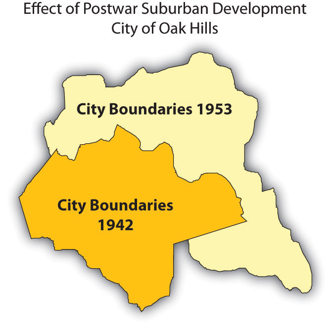
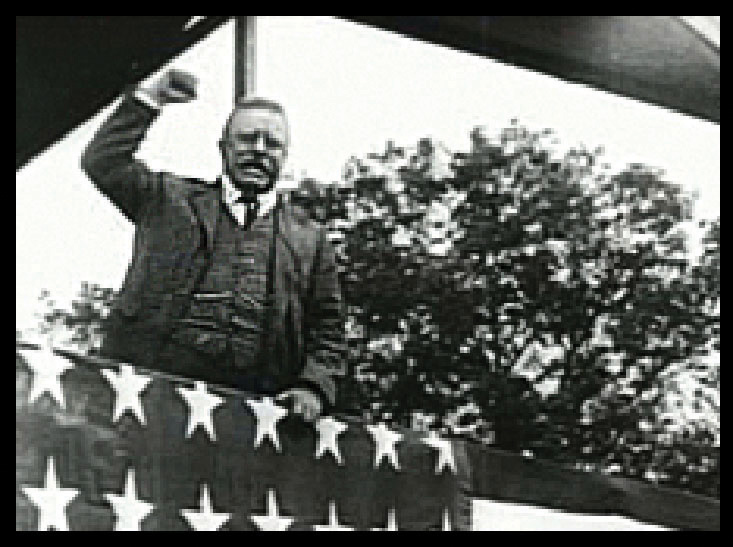
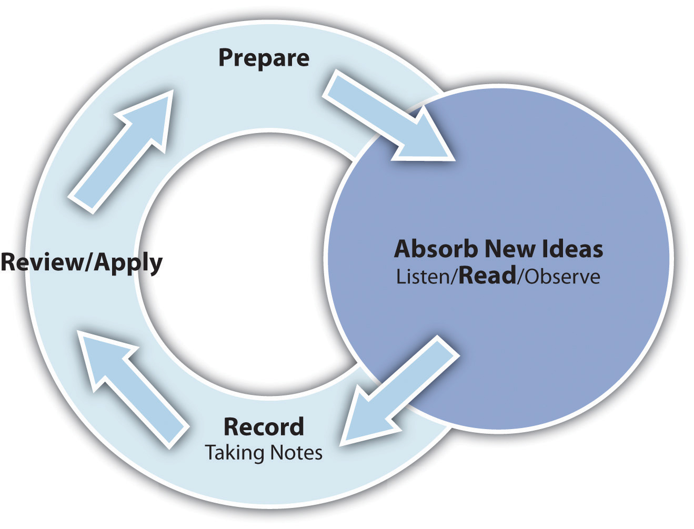

Recognize strategies for reading special types of material and special situations, such as the following:
While the active reading process outlined earlier is very useful for most assignments, you should consider some additional strategies for reading assignments in other subjects.
Mathematics present unique challenges in that they typically contain a great number of formulas, charts, sample problems, and exercises. Follow these guidelines:
You read earlier about noticing graphics in your text as a signal of important ideas. But it is equally important to understand what the graphics intend to convey. Textbooks contain tables, charts, maps, diagrams, illustrations, photographs, and the newest form of graphics—Internet URLs for accessing text and media material. Many students are tempted to skip over graphic material and focus only on the reading. Don’t. Take the time to read and understand your textbook’s graphics. They will increase your understanding, and because they engage different comprehension processes, they will create different kinds of memory links to help you remember the material.
To get the most out of graphic material, use your critical thinking skills and question why each illustration is present and what it means. Don’t just glance at the graphics; take time to read the title, caption, and any labeling in the illustration. In a chart, read the data labels to understand what is being shown or compared. Think about projecting the data points beyond the scope of the chart; what would happen next? Why?
Table 5.2 "Common Uses of Textbook Graphics" shows the most common graphic elements and notes what they do best. This knowledge may help guide your critical analysis of graphic elements.
Table 5.2 Common Uses of Textbook Graphics
|
Figure 5.3 Table 
|
Most often used to present raw data. Understand what is being measured. What data points stand out as very high or low? Why? Ask yourself what might cause these measurements to change. |
|
Figure 5.4 Bar Chart 
|
Used to compare quantitative data or show changes in data over time. Also can be used to compare a limited number of data series over time. Often an illustration of data that can also be presented in a table. |
|
Figure 5.5 Line Chart 
|
Used to illustrate a trend in a series of data. May be used to compare different series over time. |
|
Figure 5.6 Pie Chart 
|
Used to illustrate the distribution or share of elements as a part of a whole. Ask yourself what effect a change in distribution of factors would have on the whole. |
|
Figure 5.7 Map  |
Used to illustrate geographic distributions or movement across geographical space. In some cases can be used to show concentrations of populations or resources. When encountering a map, ask yourself if changes or comparisons are being illustrated. Understand how those changes or comparisons relate to the material in the text. |
|
Figure 5.8 Photograph  |
Used to represent a person, a condition, or an idea discussed in the text. Sometimes photographs serve mainly to emphasize an important person or situation, but photographs can also be used to make a point. Ask yourself if the photograph reveals a biased point of view. |
|
Figure 5.9 Illustration |
Used to illustrate parts of an item. Invest time in these graphics. They are often used as parts of quizzes or exams. Look carefully at the labels. These are vocabulary words you should be able to define. |
|
Figure 5.10 Flowchart or Diagram  |
Commonly used to illustrate processes. As you look at diagrams, ask yourself, “What happens first? What needs to happen to move to the next step?” |
Science occurs through the experimental process: posing hypotheses, and then using experimental data to prove or disprove them. When reading scientific texts, look for hypotheses and list them in the left column of your notes pages. Then make notes on the proof (or disproof) in the right column. In scientific studies these are as important as the questions you ask for other texts. Think critically about the hypotheses and the experiments used to prove or disprove them. Think about questions like these:
Social sciences texts, such as those for history, economics, and political science classes, often involve interpretation where the authors’ points of view and theories are as important as the facts they present. Put your critical thinking skills into overdrive when you are reading these texts. As you read, ask yourself questions such as the following:
Record your reflections in the margins and in your notes.
Social science courses often require you to read primary source documents. Primary sources include documents, letters, diaries, newspaper reports, financial reports, lab reports, and records that provide firsthand accounts of the events, practices, or conditions you are studying. Start by understanding the author(s) of the document and his or her agenda. Infer their intended audience. What response did the authors hope to get from their audience? Do you consider this a biasA personal inclination that may prevent unprejudiced consideration of a question.? How does that bias affect your thinking about the subject? Do you recognize personal biases that affect how you might interpret the document?
Reading texts in a foreign language is particularly challenging—but it also provides you with invaluable practice and many new vocabulary words in your “new” language. It is an effort that really pays off. Start by analyzing a short portion of the text (a sentence or two) to see what you do know. Remember that all languages are built on idiomsAn expression whose meaning is not predictable by the meanings of the words that make it up; many slang expressions are idioms. as much as on individual words. Do any of the phrase structures look familiar? Can you infer the meaning of the sentences? Do they make sense based on the context? If you still can’t make out the meaning, choose one or two words to look up in your dictionary and try again. Look for longer words, which generally are the nouns and verbs that will give you meaning sooner. Don’t rely on a dictionary (or an online translator); a word-for-word translation does not always yield good results. For example, the Spanish phrase “Entre y tome asiento” might correctly be translated (word for word) as “Between and drink a seat,” which means nothing, rather than its actual meaning, “Come in and take a seat.”
Reading in a foreign language is hard and tiring work. Make sure you schedule significantly more time than you would normally allocate for reading in your own language and reward yourself with more frequent breaks. But don’t shy away from doing this work; the best way to learn a new language is practice, practice, practice.
Note to English-language learners: You may feel that every book you are assigned is in a foreign language. If you do struggle with the high reading level required of college students, check for college resources that may be available to ESL (English as a second language) learners. Never feel that those resources are only for weak students. As a second-language learner, you possess a rich linguistic experience that many American-born students should envy. You simply need to account for the difficulties you’ll face and (like anyone learning a new language) practice, practice, practice.
Go online and open a Web-based language translator such as Babel Fish (http://www.babelfish.yahoo.com). In the translation window, type in a phrase that you or your friends might say in your daily conversations, including any slang terms. Translate it to another language (any language will do) and then copy the translation. Then open a new translation window, paste the translated phrase, and translate back from that language to English. Does it match your original phrase? Try this with other languages to see if your results vary. What does this tell you about automated translation programs?
If you are a parent of young children, you know how hard it is to get your schoolwork done with them around. You might want to consider some of these strategies.
When accessing materials online, you should ask additional questions in order to fully understand the assignment. The Internet provides access to virtually endless numbers of articles on just about any subject. The following five steps will help you understand the “story behind the story” in online materials and also evaluate the reliability of the material, especially if this is a reading you selected yourself for research or independent work.
University of California Berkeley Library. http://www.lib.berkeley.edu/TeachingLib/Guides/Internet/Evaluate.html
Cornell University Olin and Uris Libraries. http://www.library.cornell.edu/olinuris/ref/webcrit.html
Duke University Library. http://library.duke.edu/services/instruction/libraryguide/evalwebpages.html
Go online and find an article about something you are reading about in a textbook. (Use the five steps to evaluate the article.) Scan both the Web page and the equivalent textbook section and list your questions for both. Are the questions different, or are many similar? How does each author answer those questions? Which do you think is better written and more authoritative? Why?